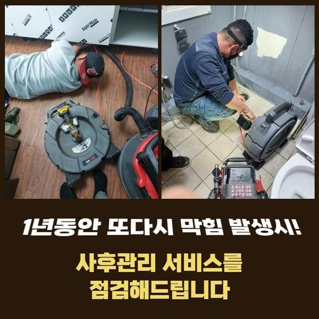
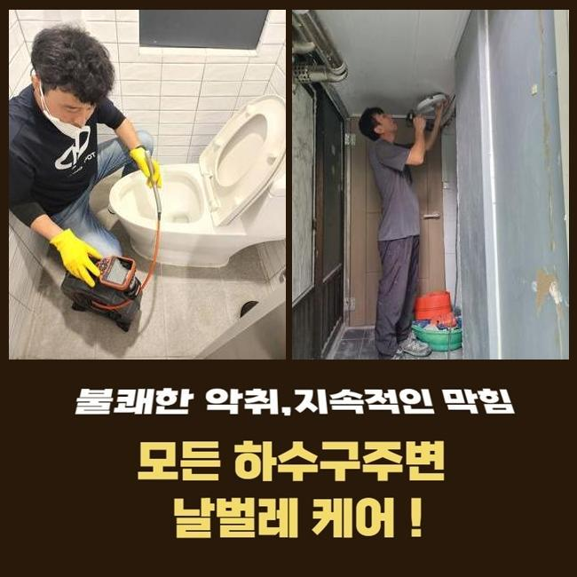
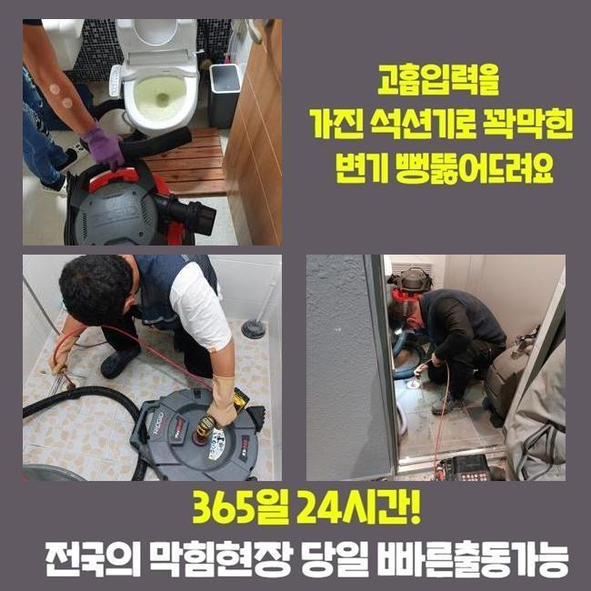
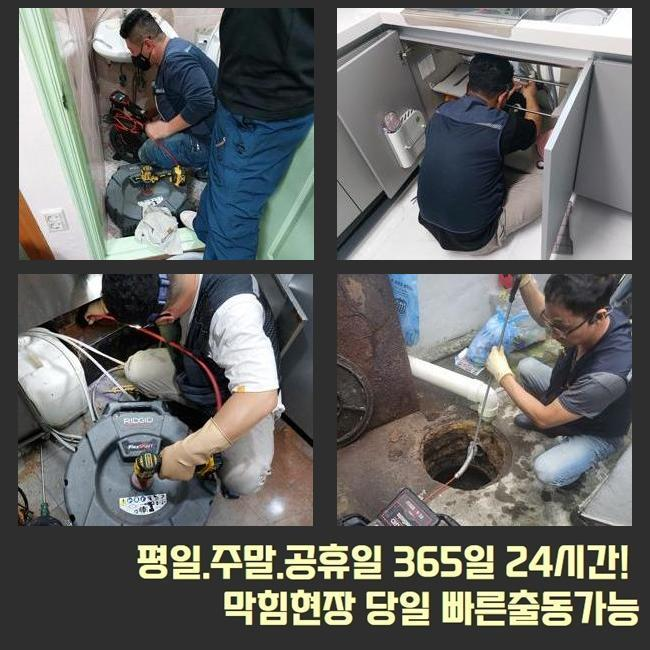
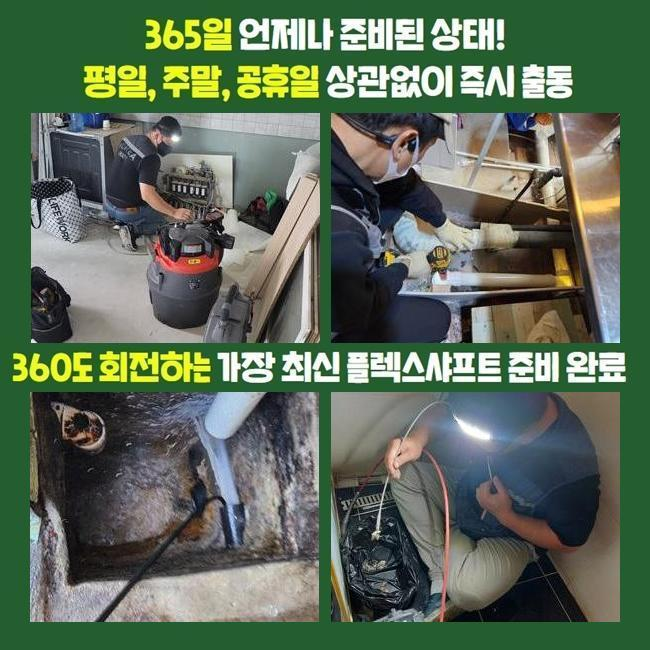
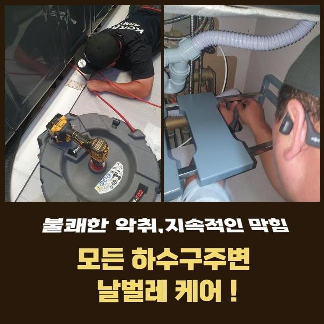

🏠 아산 풍기동오수관막힘 남동 집수정청소 누수탐지
아산 풍기동 싱크대막힘 전문 시공 후기

📋 작업 개요
- 위치: 아산 풍기동, 풍기동, 아산
- 서비스 유형: 싱크대막힘, 하수구막힘, 배관막힘, 집수정막힘, 누수수리, 뚫는업체, 배관청소, 악취차단
- 작업 일시: 2025. 6. 9. 16:52
- 업체명: 하수구수사대 (010-5615-2118)
🔍 문제 상황
아산 풍기동오수관막힘 남동 집수정청소 누수탐지
수돗물을 빈번하게 쓰는 부엌 화장실 등에서 문득 물이 배출되는 활동이 중단되고 작동하지 않는 상황이라면 즉각 관통을 시도해야 합니다
싱크대 쪽에서 막힘이 생길 땐 끼니를 챙길 때도 문제점이 생기고 그릇들을 정리하는 일도 힘들어질 것입니다
싱크대를 못쓸수록 힘들어지니 신속하게 배관의 수리를 해달라고 전화를 걸어주십니다
얼마 전 찾았던 주택도 주방 싱크대가 중단돼서 자세한 진단 및 통수를 내는 과정이 즉시 필요하시다며 접수를 해주셨는데요
심지어는 근래에 싱크대를 새걸로 재설치했는데 어이없게도 막히는 상황이 나타나게 되었고 집에 있는 도구만으로는 개선을 할 수가 없는 사안이라 판단하여 전문가에게 서비스를 요청주신 겁니다
현장에 당도하고 나서는 무엇때문에 막혀버렸는지 내막을 이해할 수 있도록 우선 하부장 문을 열고 평가 절차를 시작해 봤어요
해당 해부장 안에서는 오염된 물이 울컥 올라왔고 수분을 머금은 상태로 보였고 올라온 물기의 양도 상당한 수준이었습니다
이걸 처치하지 않았다면 부식이 될 수 있고 아랫집으로 물 피해가 확산될 수 있기에 좀 더 신속한 배관 수리를 실시해야 했습니다
배수로 청소에 관한 단계로 넘어가려고 하부장에 설치되어 있던 주름관을 탈거하여 속을 들여다보니 침전물이 잔뜩 덮여있는 형상이었고 악취가 훅 풍겨왔어요!

🔎 원인 분석
💡 전문가 진단: 정밀 진단 장비를 사용하여 슬러지의 고착 여부를 판명하고 타격/세척 작업을 실시했습니다.
점도가 높은 이물질들이 주름진 사이사이에 촘촘하게 붙은 모습이었고 노후되기도 했었습니다
이 정도의 오염도라면 더 어둑한 심층부에는 지저분한 물질들이 장기간 자리한데다가 그 양도 상당할거라는 예측을 할 수 있었습니다
바로 보이는 하수구 입구에도 찌꺼기들이 많이 보여서 초반 정화를 위해서 석션기를 가장 먼저 내려 보냈습니다
석션기는 오물을 포함하여 내측에 정체된 잔수도 모조리 빼내주는 절차를 거쳐주니 싱크대 막힘에서는 특히 더욱 유익합니다
잘 풀리는 이물질들이 부유하거나 입구 부근에서 자리 잡았다면 석션을 활용했을 때 개선이 될 때도 많아요
메인이 되는 뚫음 활동을 펼치기 전에 석션을 먼저 써줘서 안쪽의 찌꺼기를 꺼내준 이후에 석션만으로 뚫릴 지 알아보기로 했습니다
파워를 높여서 강력한 세기로 돌려보았는데도 통수가 확보되지 않아서 관로 속을 살펴보는 과정을 진행했습니다
내부 현황을 파악하려면 꽉 막힌 관로에 내시경 장치를 진입시켜서 내부 상황에 관련하여 파악해 보아야 합니다
관찰 카메라의 화면에서 보여진 상황은 전반적으로 새빨간 면적들이 보이고 있었어요
붉은 색인 이유는 카메라에 장착된 조명이 기름진 슬러지를 밝혔을 때 발현되는 모습입니다!
조사를 마치니 이번 현장의 경우는 덩어리진 슬러지가 잔뜩 차올라서 이런 물막힘 증상이 물 위로 드러난 듯 했습니다

🔧 작업 과정
막힌 쪽들을 다 파악해서 더러움이 남지 않도록 모두 없애 주기로 노선을 설정했습니다
거의 모든 하수구에 활용되는 장비라고 할 수 있는 샤프트의 전원을 켜고 본격적인 청소에 착수했습니다
이 기기는 기다란 케이블의 끝인 헤드에 갈고리같은 노커가 장착되어 있는데요
덩어리처럼 경화가 이루어진 집합된 오염원들도 해체시키기 때문에 흡입하는 작업이 간소화될 수 있게 만들어 줍니다
대규모 분량을 세분화하여 잘라 준다면 미처 빨아당겨지지 않던 잔해물 마저도 파이프 통로 외부로 투출이 됩니다
해당 배관의 컨디션과 오염원의 속성을 고려하여 효율적인 기기를 골라서 해당 배관의 청소를 시행하게 된답니다
수시로 카메라를 넣어서 배수관 내를 살피면서 안정성을 기합니다
중간중간 석션 업무도 적시적소에 적용하여 하자 없는 상태가 만들어지게끔 시공을 담당해 드리고 있습니다
대강 물이 방출되는 정도를 드리는 것에 만족하는 게 아닙니다
원인을 직접적으로 해소해서 물이 고이는 증세가 해결되는 것은 당연하게 제공되며 전반부를 말끔하게 변모되도록 개선을 해드리고 있어요
물을 부어보았더니 유속이 느려지는 현상이 보이지 않았기에 작업이 깔끔하게 끝났더라고요
이처럼 더블체크 과정까지 종결 지은 다음에는 석션 본체에 물 흐름을 끊어놓았던 오염물질들이 전량 저장되어 있습니다
물에 녹아있는 작은 이물질은 밖으로 나가게 되고 무게감이 꽤 나가는 오물들은 하부에 자리잡아요
두꺼운 잔여물은 다시 아래로 부으면 안 되고 필터링을 거친 뒤에 따로 수집을 해서 깔끔하게 폐기해야 합니다
무턱대로 부어버리면 하단이 차단되어 재발되는 문제를 양산하니 정확하게 처리한답니다
상태가 좋아짐을 확인하면 정화활동이 마무리되는데 재설치를 하려다보니 주름배관도 굉장히 더러워져 있더라고요


✅ 작업 완료
규격이 맞는 새 호스로 다시 설치를 도와드렸고 이로 인해 의뢰인이 갖던 어려운 측면들을 모두 처리하게 됐어요
싱크대가 마비되는 것이 초기 단계를 넘어섰다면 단순한 자가조치로는 기능 회복을 시키는 게 불가능 할 수 있어요
벽체에 유막이 강하게 쌓여버린 상황 속에서는 강제로 이탈시키는 기기를 직접 적용해야만 배수구가 다치지 않고 쾌적하게 막힘이 사라지게 된답니다
막힌 걸 뚫으려면 내시경 카메라라거나 장비 라인업들을 두루 지참하고 내방했을 때에 답답한 하수구 차단문제를 처리할 수 있게 됩니다
싱크대의 중단때문에 하수가 정체해서 배관에 대한 클리닝이 시급하실 때에는 저희측에 지원을 요청주시기 바랍니다!



⚠️ 베란다 누수 및 방수 관리 방법
- ✅ 비가 많이 올 때 창틀 주변이나 아래층 천장에 얼룩이 생기는지 정기적으로 확인해 보세요.
- ✅ 우수관 주변 실리콘 마감이 들뜨거나 깨진 틈새가 있는지 손상 여부를 수시로 체크하세요.
- ✅ 베란다 바닥 타일의 줄눈(메지)이 소실되면 그 틈으로 물이 침투하여 누수가 유발됩니다.
- ✅ 누수 의심 증상 발견 시 방치하면 아래층 손실이 커지므로 즉시 전문가의 진단을 받으십시오.
💡 핵심 정리
- 확실한 장비 작업(내시경 점검 및 샤프트 스케일링)으로 원인을 뿌리 뽑습니다.
- 작업 후 1년 이내에 동일한 부위 재발 시 100% 무상 A/S 서비스를 보장합니다.
- 서울 · 경기 · 인천 전 지역에 24시간 언제든 긴급 출동할 수 있도록 항시 대기 중입니다.
❓ 자주 묻는 질문 (FAQ)
🚨 아산 풍기동 싱크대막힘 문제로 고민이신가요?
정확한 원인 진단과 확실한 시공으로 재발 없는 해결을 약속드립니다.
24시간 긴급 출동 | 서울 · 경기 · 인천 전지역 | 1년 내 재발 시 무상 A/S